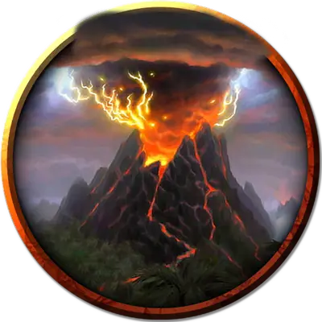

Колыбель огненного отпрыска
Cradle of the Fire Scion
Громадный Элементаль, обычно законно-злой

Класс Доспеха 20 (природный доспех)
Хиты 555 (30к20 + 240)
Скорость 40 футов
| мод | спас | ||
|---|---|---|---|
| СИЛ | 28 | +9 | +9 |
| ЛОВ | 12 | +1 | +1 |
| ТЕЛ | 27 | +8 | +8 |
| мод | спас | ||
|---|---|---|---|
| ИНТ | 12 | +1 | +1 |
| МДР | 20 | +5 | +5 |
| ХАР | 17 | +3 | +3 |
Сопротивление урону холод, электричество; немагический дробящий, колющий, рубящий
Иммунитет к урону огонь, яд
Иммунитет к состояниям истощение, окаменение, отравление
Чувства тёмное зрение 120 футов, пассивное Восприятие 15
Языки Великаний, Первичный
Опасность 25 (75000 опыта)
Бонус мастерства +8
Особенности
Пробуждение отпрыска. Колыбель - это сосуд отпрыска Суртура [scion of Surtur]. Когда хиты колыбели уменьшаются до 0, её остов каменеет, после чего обращается в прах. Отпрыск мгновенно появляется в том пространстве, которое занимала колыбель, и использует инициативу колыбели.
Легендарное сопротивление (5/день). Если колыбель проваливает спасбросок, она может вместо этого сделать спасбросок успешным.
Сопротивление магии. Колыбель совершает с преимуществом спасброски от заклинаний и прочих магических эффектов.
Осадный монстр. Колыбель наносит двойной урон объектам и сооружениям.
Действия
Мультиатака. Колыбель совершает три атаки Размашистым ударом или Извержением лавы в любой их комбинации.
Размашистый удар. . Рукопашная атака оружием: + 17 к попаданию, досягаемость 20 футов, одна цель. Попадание: 31 (4к10 + 9) дробящего урона плюс 14 (4к6) урона огнём.
Извержение лавы. . Дальнобойная атака оружием: +17 к попаданию, дистанция 120 футов, одна цель. Попадание: 27 (4к8 + 9) урона огнём. Если целью является существо или легковоспламеняющийся предмет, он воспламеняется. До тех пор, пока существо находящееся в 5 футов от воспламенения и не использует действие что бы потушить огонь, цель получает 10 (3к6) урона огнём в начале каждого своего хода.
Извергающееся дыхание (перезарядка 5-6). Колыбель выдыхает пламя и вулканические газы в виде 90-футового конуса. Каждое существо в этой области должно совершить спасбросок Ловкости Сл 24. В случае провала существо получает 55 (10к10) урона огнём и становится отравленным на 1 минуту. В случае успеха существо получает половину этого урона.
Существо, отравленное таким образом, может совершать спасбросок Телосложения Сл 24 в конце каждого своего хода, оканчивая на себе дейтсвие эффекта в случае успеха.
Бонусные действия
Лавовый гейзер. Колыбель вызывает извержение лавы из точки на земле, которую она может видеть в пределах 120 футов. Каждое существо в цилиндре радиусом 20 футов и высотой 50 футов с центром в этой точке должно совершить спасбросок Ловкости Сл 21, иначе получит 14 (4к6) урона огнём.
Описание
Отпрыск Суртура, дремлющий на вершине вулкана, заставляет подниматься нескончаемый столб дыма, иногда подсвечиваемый снизу огненными всплесками лавы. Пока отпрыск грезит о битве — возможно, о битве за то, чтобы вывести Аннама из затворничества, объединив великанов или о войне за завоевание всего во имя Суртура — вулкан грохочет и извергает расплавленную ярость.
Если незваные гости потревожат место его упокоения, колыбель огненного отпрыска поднимется в виде двуногого джаггернаута из расплавленного камня. Иногда шахтеры рискуют своей жизнью, чтобы найти богатые залежи руды в вулкане отпрыска или заблудшие приверженцы культа огня приносят жертвы, призванные умиротворить или пробудить вулкан, но пробужденная колыбель бросает вызов всем их ожиданиям. Подобно живому вулкану, колыбель метает в незваных гостей шары магмы, выдыхает пылающие газы и заставляет расплавленный камень извергаться из земли вокруг неё.
Если колыбель разрушена, отпрыск Суртура внутри нее пробуждается. Фигура отпрыска высотой 60 футов окутана непрерывным облаком вздымающегося пепла и дыма. Пробужденный отпрыск формирует клинок из лавы в своей могучей руке и планирует возобновить свои древние завоевательные кампании, предпочтительно во главе армии огненных великанов.